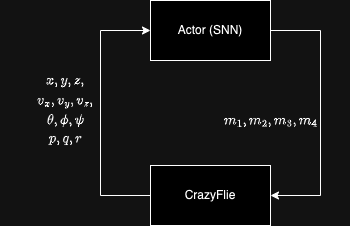
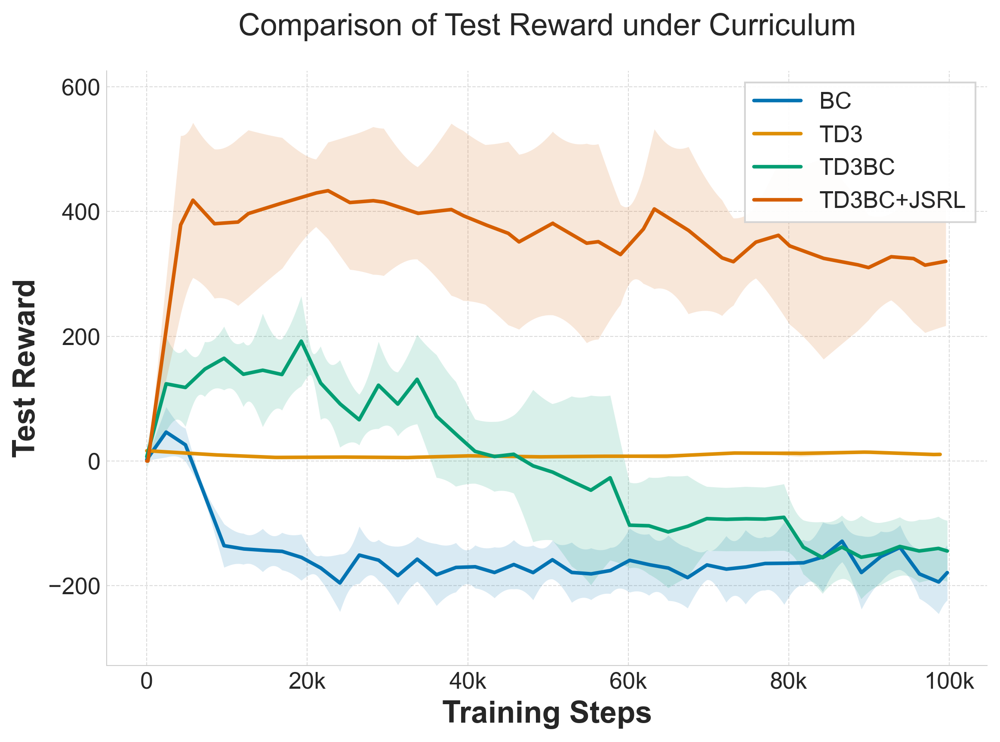
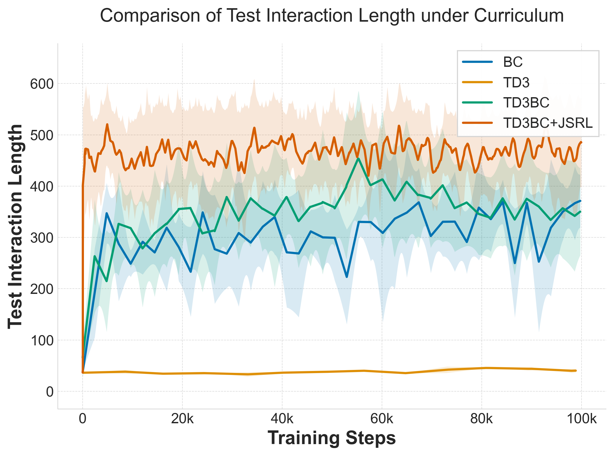
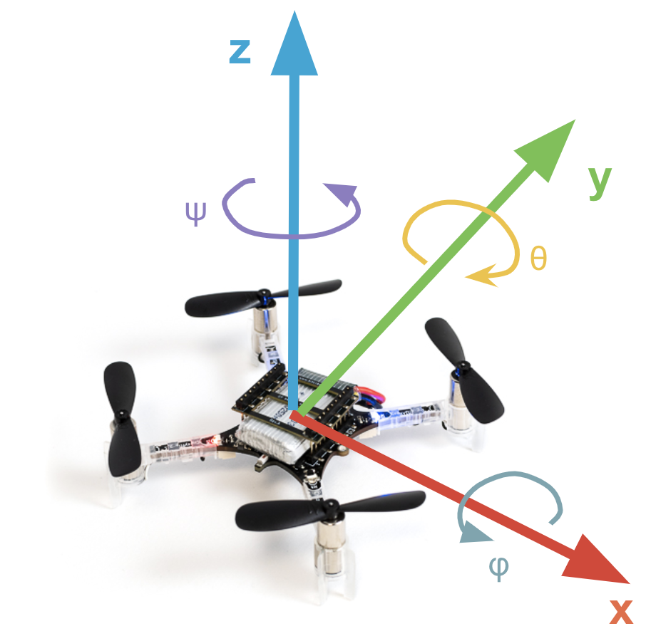

Leveraging the temporal processing capabilities of SNNs in reinforcement learning requires training on sequences rather than individual transitions. However, subpar initial policies often lead to early episode termination, preventing collection of sufficiently long sequences to bridge the warm-up period required by stateful networks.
This research introduces a novel RL algorithm tailored for continuous control with SNNs, demonstrates successful training on a quadrotor control task, and validates real-world deployment on the Crazyflie platform.
The Warm-Up Period Challenge
Stateful neural networks require time to stabilize their hidden states after initialization. For SNNs, membrane potentials need several timesteps to reach meaningful values before gradients can be computed reliably. We call this stabilization period the warm-up period.
When controlling a drone, poor initial performance leads to short interactions—the agent crashes before gathering enough data to improve. This creates a fundamental chicken-and-egg problem.

The spiking controller receives position, velocity, orientation, and angular velocity, outputting motor commands for the Crazyflie quadrotor at 100Hz.
TD3BC + Jump-Start RL
We adapt Jump-Start Reinforcement Learning (JSRL) to address the warm-up challenge. A pre-trained guide policy creates a curriculum of starting conditions for the SNN policy.
Key Components
- Guiding Policy: TD3-trained non-spiking actor that bridges the warm-up period
- Spiking Policy: LIF-based network that learns temporal dynamics
- Hybrid Replay Buffer: Contains transitions from both policies
- Behavioral Cloning Term: Gradually decaying BC regularization
Training Objective
The loss combines RL objectives with behavioral cloning:
Where λ controls BC strength and decays over time. Gradients are computed only after the 50-step warm-up period.
Why This Works
- Jump-start: Guiding policy ensures sequences are long enough to bridge warm-up
- BC term: Provides stable initial learning signal from demonstrations
- Asymmetric architecture: SNN actor with ANN critic combines temporal processing with training stability

Offline methods (BC, TD3BC) fail as reward function adapts. TD3BC+JSRL achieves 400-point reward while baselines stay below -200.

TD3-trained policies frequently terminate early. TD3BC+JSRL achieves longer, more stable flight trajectories.
Computational Efficiency Analysis
We evaluated our trained SNN against a comparable ANN using NeuroBench. The ANN requires explicit action history (32 timesteps) to control the drone; our SNN uses inherent temporal dynamics instead.
| Model | Reward | Footprint | Sparsity | Eff. MACs | Eff. ACs | Needs History? |
|---|---|---|---|---|---|---|
| ANN (64-64) | 447 | 55.3 KB | 0% | 13.7k | 0 | Yes |
| SNN (256-128) | 446 | 158.3 KB | 79% | 4.6k | 12.2k | No |
Key Insight: Computational Trade-offs
- 79% activation sparsity enables efficient neuromorphic deployment
- Energy-efficient accumulates (ACs) instead of multiply-accumulates (MACs)
- No observation history required — temporal dynamics encoded in membrane potentials
- Estimated energy: 9.7×10⁻⁵ mJ per inference step
Real-World Deployment on Crazyflie
The trained SNN was deployed on a physical Crazyflie quadrotor without fine-tuning or domain randomization—a zero-shot sim-to-real transfer.

The Crazyflie 2.1 platform and coordinate system used for position control validation.
Flight Performance
The SNN controller successfully executes complex maneuvers:
- Circular trajectories: Smooth flight patterns
- Figure-eight patterns: Complex trajectory tracking
- Square trajectories: Sharp turns and position holding
The controller exhibits slightly oscillatory behavior compared to ANNs with full action history. However, when comparing to an ANN without action history, the ANN completely fails to control the drone—highlighting the critical advantage of SNN temporal processing.
Watch the SNN controller in action:
View Demonstration VideosQuantitative Results
| Metric | ANN + History | ANN (no history) | SNN (Ours) |
|---|---|---|---|
| Position Error (m) | 0.10 | 0.25 | 0.04 |
| Trajectory Error (m) | 0.21 | N/A (crashed) | 0.24 |
| Requires History? | Yes (32 steps) | No | No |
Ablation Study
We systematically removed components to understand their contribution:
| BC Term | Jump-Start | Final Reward | Steps to 100 |
|---|---|---|---|
| Yes | Yes | 412 ± 6.7 | 2,200 |
| No | Yes | 334 ± 25.6 | 33,030 |
| Yes | No | 32 ± 1.2 | Failed |
| No | No | 36 ± 4.1 | Failed |
Ablation Findings
- Jump-start is critical: Without it, SNNs cannot bridge the warm-up period
- BC term provides 15× speedup: 2,200 vs 33,030 steps to reach reward=100
- Both components are synergistic: Neither alone achieves optimal performance
Key Contributions
Summary
- Novel Algorithm: TD3BC+JSRL specifically designed for sequential SNN training
- Warm-Up Solution: Jump-start mechanism bridges the critical stabilization period
- Zero-Shot Transfer: Sim-to-real without observation history augmentation
- Lowest Position Error: 0.04m vs 0.10m for ANNs with full history
- 79% Sparsity: Energy-efficient neuromorphic deployment ready
- 600-Point Gap: TD3BC+JSRL achieves 400 reward vs -200 for baselines
Lessons Learned
- Warm-up period is critical — SNNs need time to stabilize membrane potentials
- Behavioral cloning accelerates learning — 15× faster convergence
- Temporal dynamics replace explicit history — reduces memory requirements
- Adaptive surrogate gradients matter — see Part 1
Conclusion
This work demonstrates that SNNs can be effectively trained for real-world control tasks through careful algorithm design. By addressing the warm-up period challenge with TD3BC+JSRL, we achieved successful zero-shot sim-to-real transfer on the Crazyflie quadrotor, with lower position error than ANNs while eliminating the need for observation history.
The 79% activation sparsity and reliance on efficient accumulate operations make these controllers ready for deployment on neuromorphic hardware platforms like Intel Loihi, where energy consumption can be reduced by orders of magnitude.